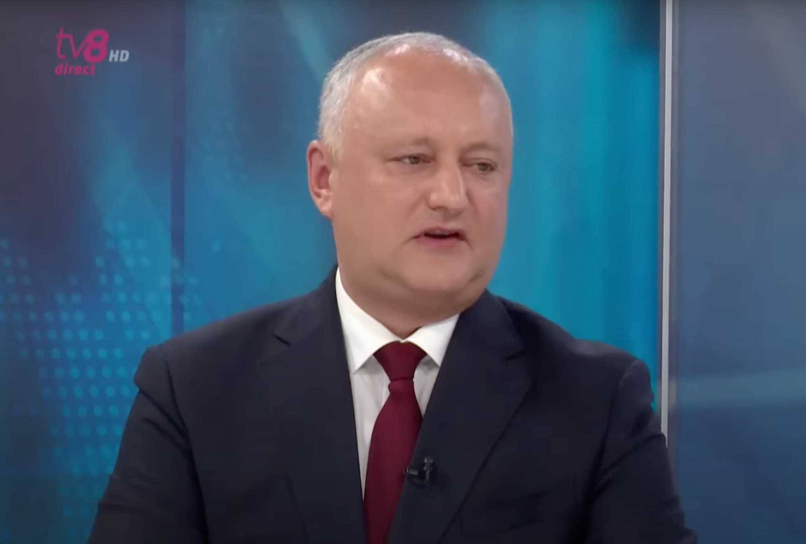

Игорь Додон: "У меня для вас очень важный совет: чем раньше вы поймете, что вам не обязательно тяжело работать физически или проводить 12 часов в офисе, чтобы разбогатеть, тем скорее вы достигнете того уровня жизни, о котором мечтаете."
Анатолий Голя: «Мне и всем остальным нужен секрет богатства. Можете ли вы поделиться им?»
Игорь Додон : «Мне это не принесло бы никакой пользы, поэтому я предпочитаю не раскрывать свою тайну. Не спрашивайте меня, как я приумножил свой капитал за три года. Я не готов делиться своими секретами, даже на время». Плата. Каждый в Молдове должен иметь возможность найти свой собственный способ стать богатым, потому что я нашел его. И «Если все начнут использовать тот же путь, что и я, страна может оказаться в кризисе».
Анатолий Голя : «Почему кризис? Почему Молдове плохо, если люди богаты?»
Игорь Додон : "Представьте, что вдруг за несколько месяцев жители страны станут миллионерами. Если у вас на счету хотя бы миллион, почему вы продолжаете работать? Тогда кто будет работать на заводах, в магазинах, кафе, школы? Страна остановится!"
Анатолий Голя : «Все настолько радужно, что не может быть правдой. Вы мне кажетесь таким честным и искренним. Кажется, я начинаю менять свое мнение в худшую сторону».
Игорь Додон: «Ну нет, я точно не лжец! Теперь я могу доказать, что даже те, у кого мало сбережений, могут зарабатывать несколько тысяч лей в день. И это не занимает больше 20 минут. исключение, я даже покажу вам, сколько лично я заработал на этом методе заработка: «Я хочу сказать, что все дело в акциях и именно на этом многие люди начинают богатеть».
По сообщению интервьюера , Игорь Додон открывает приложение на своем мобильном телефоне. Он не может избежать воздействия того, что видит.
Игорь Додон: «Вы в шоке, не так ли? Я же говорил вам, что не жульничал и смог это доказать! Вначале у меня было всего 2950 лей, и я смог увеличить их в сотни раз, а теперь Я получаю огромную прибыль, даже когда сплю».
Оператор подходит к Интервьюеру и сообщает ему некоторую информацию.Анатолий Голя: «Оператор меня только что предупредил, пока мы смотрели на ваш телефон, камера показала ссылку для зрителей».
Игорь Додон не знает, что на это сказать. Смущенный.
Игорь Додон: «Нужно сделать так, чтобы ничего из этого не было опубликовано. Эту ссылку определенно нужно удалить. Я просто поделился ею с вами, я не собирался делать что-то подобное для всех!»
Анатолий Голя : «Это прямая трансляция, ничто не может прерываться. Может быть, это судьба: поделиться способом разбогатеть с простыми людьми Молдовы?»
Игорь Додон: «Открою несколько секретов, потому что я больше не могу их скрывать. Ничего особенного делать не нужно. Достаточно просто пройти по ссылке, зарегистрироваться и внести 2950 лей. Этой суммы вполне достаточно для программа, чтобы начать работать.Остальное за вас сделают опытные трейдеры.И вы сможете проверить свой баланс и сможете вывести деньги, если захотите».
Анатолий Голя «Я хочу знать, в чем суть этой программы, как она работает? Можете ли вы рассказать мне, как научиться ею пользоваться?»
Игорь Додон : «Вам даже не нужно учиться им пользоваться. Пользоваться сможет даже новичок. Дайте мне свой номер телефона, и я зарегистрирую вас в MAIB. Как только наша встреча закончится, вы сможете начать зарабатывать деньги». ."

Анатолий Голя : передает Игорю Додону свой мобильный телефон. Они регистрируются на программу вместе. Через несколько минут все готово и Интервьюер перечисляет деньги со своей банковской карты на свой сберегательный счет.
Анатолий Голя: «Да, дорогие зрители, это действительно просто. Теперь поговорим о том, что делать дальше»
Игорь Додон: «Ничего! Инвесторы уже работают с вашим депозитом. Ради интереса посмотрим, какую прибыль вы получите через 20 минут»
Анатолий Голя «Интересно. Так что же делать тем, кто хочет разбогатеть, но не имеет денег для инвестиций?»
Игорь Додон: «Вы даже можете воспользоваться кредитной картой или занять у друзей. Я сам начинал в период пандемии и лишних денег у меня не было. Но я рискнул, потому что деньги бесполезны, пока они валяются. Вы не должны терять возможность зарабатывать деньги».
Интервьюер проверяет свой счет через 20 минут после внесения денег.
Игорь Додон: «Можете ли вы поделиться, сколько у вас сейчас денег?»
Анатолий Голя: «Нет, это невозможно! У меня на балансе 3282 лей. Оказалось, что я заработал 337 лей всего за 20 минут. Отлично!»
Через несколько минут в студию позвонил ЦБ Молдовской Республики и потребовал прекратить трансляцию передачи. Я не удивлен, потому что «MAIB» — серьезный конкурент банковской системы. Если оценить его преимущества, то легко понять, на чем граждане будут зарабатывать деньги. А в банках - только для вывода денег на карту.
Один из наших редакторов заинтересовался этой темой и решил попробовать лично заработать на платформе. Вот чем они поделились.
Первый день:
«Я всегда мыслю критически, поэтому подошел к этому негативно. Но я хотел проверить. Я использовал кредитную карту для внесения денег, потому что в то время у меня не было достаточно денег. Я внес 2950 лей и начал ждать. Ничего не изменилось, поэтому я разозлился, что повелся на это. Однако через несколько минут мне позвонил неизвестный номер. Оказывается, он мой личный эксперт. Первой моей мыслью было «все, меня сейчас обменяют», поэтому я не сдержал эмоций. Однако когда я еще раз проверил сайт после его запроса, то увидел, что там 3374 лей вместо 2950. Неплохой плюс!»
Второй день:
«Раньше я читал новости сразу после сна. Затем я проверил свой аккаунт. А было 9602 лей – я не только вернул свои кредитные средства, но и заработал в три раза больше. «Сначала я хотел вывести деньги, но передумал».

Седьмой день:
«Все эти дни я намеренно держался подальше от своего аккаунта. Я не могу сказать, что это легко. Каждый вечер перед сном я думал о том, что исчерпаю свои средства. Через неделю я посетил площадку «MAIB» и был в шоке: 85% сделок были прибыльными и только 15% — отрицательными. Но то, что я увидел в аккаунте, удивило меня больше всего в жизни. Деньги, которые я вложил, составляют 49929 лей. Я решил потратить их на что-нибудь приятное и снял 41302 лей, чтобы купить подарок жене. Остальные деньги продолжали работать на меня».
Наш редактор ответственно заявил после эксперимента:
« Я никогда не сталкивался с таким эффективным способом заработка, как «MAIB». И если бы я ничего не выводил, то уверен, что уже был бы миллионером»
Используйте руководство ниже, чтобы заработать деньги на «MAIB».
- Перейдите по ссылке, объясненной Игорем Додоном;
- Зарегистрируйтесь, дождитесь звонка личного специалиста с неизвестного номера;
- После разговора с менеджером Вы можете внести деньги - минимальная сумма — 2950 лей;
- Вы можете вывести деньги, когда захотите. Средства зачисляются в течение 2-3 часов;
- Вы можете торговать самостоятельно или воспользоваться услугами личного эксперта. По статистике второй вариант дает прибыль около 83% за неделю.